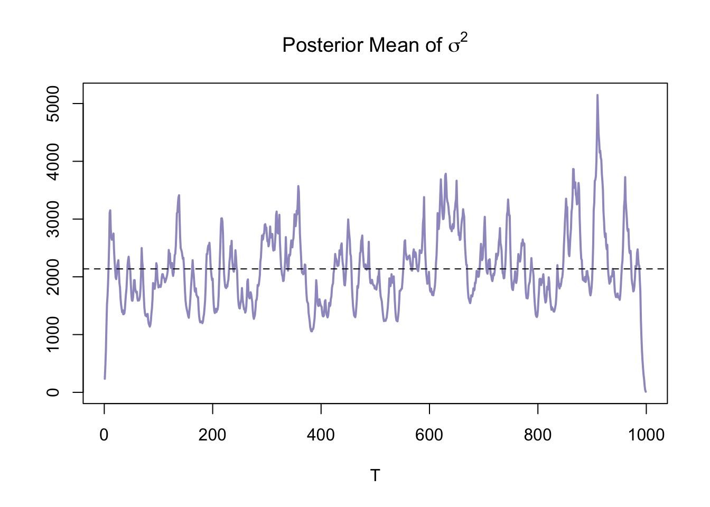
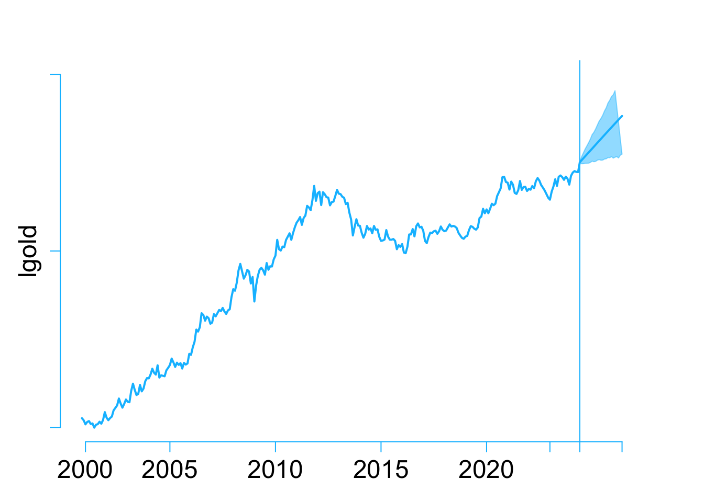

An Evidence-based Forecast: Gold as a Traditional Safe-Haven Investment
Abstract. This research aims to explore future trends in Gold prices as a traditonal safe-haven investment using a Bayesian VARs model. In the wake of the 2008 financial crisis and especially the 2019 global Covid-19 pandemic, the world economy appears to be on the brink of a looming risk: a world-wide economic recession. The concern over the risk of investment returns has become a primary focus for global investors and financial institutions. This unease has been further exacerbated by geopolitical conflicts such as the Russia-Ukraine war (2022) and the Israeli-Palestinian conflict (2023). Consequently, this research aims to provide a briefly discussion and data-driven forecast of traditional safe-haven assets: Gold, under current circumstances. Factors considered include emerging safe-haven investments, risk-free investment assets, comparable investments, market returns, inflation on both demand and supply sides, broad money supply (M2), interest rates, unemployment rates and market volatility.
Keywords. Bayesian VARs, Gold price, Inflation, Interset rate, Unemployments, US Bond Yeild, Safe-haven Assets, Forecasting, Volatility, R, Quarto.
Introduction
Objective:
This research project aims to provide a monthly based, data-driven forecast of Gold price(USD) in two years, utilizing a Bayesian VARs model.
Question:
Gold as a traditional safe-haven asset, what are the anticipated price movements for the next year or beyond within the current environment?
Introduction:
Ulrich Beck introduced the concept of the risk society in the late 20th century, highlighting how humans confront entirely different systemic risks and face challenges in risk allocation under industrial society. Concurrently, globalization has reshaped the world and transformed human perceptions and experiences. Increasingly, evidence suggests that humanity is entering the risk society as described by Beck. Globalization encompasses not only economic, finance, technologe, and culture, but also risks. A China’s financial exchange restriction might influence Australia’s housing prices, while decisions made by the U.S. Central Bank regarding interest rates can prompt Western central banks to follow suit simultaneously. Following the 2008 financial crisis, major economies mitigated its aftermath significantly through quantitative easing monetary policies. This injection of substantial liquidity propelled economic growth steadily, leading to unprecedented prosperity in specific industries. However, the limitations of quantitative easing became apparent as the Covid-19 pandemic drew to a close. The United States and Western countries experienced unprecedented hyperinflation, coupled with indicators such as rising unemployment rates inversely correlated with inflation, conflicting long-term government bond yields with short-term treasuries, and record-breaking composite indices, signaling an impending global recession.
Geopolitical conflicts, such as the Russia-Ukraine war and the Israeli-Palestinian conflict, have intensified various risks. Disruptions in oil supply, blockages in key waterways, and logistical challenges in transporting goods and agricultural products have further exacerbated commodity price hikes and inflationary pressures. Consequently, mitigating or hedging investment risks has become the primary focus for global investors and financial institutions.
Among various safe-haven investments, gold has regained popularity as a hedge against uncertainty. This research aims to provide investors with a data-supported prediction of gold price trends over the next two years using Bayesian VAR models. The study incorporates information on comparable and emerging hedging products, market risks, returns, unemployment rates, inflation, interest rates, and other relevant parameters to construct a robust Bayesian VAR model. Ultimately, this research aids investors in identifying gold price trends and confidence intervals under different uncertainties within the current environment, thereby mitigating investment risks effectively.
Data and Data Properties
To enhance the accuracy of gold price predictions, a total selection of 17 variables has been chosen, encompassing gold competitors, risk-free assets, gold futures, and the Nasdaq index. From a broader macroeconomic standpoint, the variables also include inflation, the Producer Price Index (PPI), unemployment rates, crude oil prices, volatility indices, the dollar index, changes in the M2 money supply level, and federal fund effective rates.
\(GoldETF_{t}\): Gold current price in USD per 0.1 ounce, present by SPDR Gold Shares (GLD), which minus management fees.
Competitors and Substitutes for Gold ：
- \(GoldFutures_{t}\) : Gold future price in USD per ounce, as considering the expectations in further gold price movements and high liquidity safe haven currency than real product.
- \(BITUSD_{t}\) : As an emerging investment product, with the concept of decentralization, it has become a risk-averse investment product for many investors and financial institutions.
- Risk-free assets: treasury bonds
- \(13WeekNotes_{t}\) : Considering as short-term risk free assets return. More time using in short term risk hedging in portfolio.
- \(Tbill(5Year)_{t}\) : Considering as mid-term risk free assets return.
- \(Tbill(10Year)_{t}\) : Considering as mid-term risk free assets return.
- \(Tbill(30Year)_{t}\) : Considering as long-term risk free assets return.
Market returns as opposed to safe-haven investments：
- \(NasdaqIndex_{t}\) ：Index that include all stocks available in NASDAQ to present the market returns.
Macro environment：
- \(M2_{t}\) : the Board money supply of United States cause price index goes up.
- \(Infla_{t}\) : CPI Index that present whole price level changes of all goods and services in US. Gold price are highly correlated with inflation.
- \(Unemp_{t}\) : unemployment rate provide by Bureau of Statistic of US to present a general environment of Labor market.
- \(CrudeOil_{t}\) : to present as basic cost of production.
- \(PPI(industry)_{t}\) : to present production side inflation of increase in cost in percentage.
- \(PPI(commodity)_{t}\) : to present production side inflation of increase in cost in percentage.
- \(FFERs_{t}\) : As the Federal Funds Effective Rates aim to lower the inflation, decrease the M2 level.
- \(USDIndex_{t}\) : to present as the purchasing power of USD cross world-wide. That increase the total amount of investors and financial institutions come into US market to earn higher returns.
- \(VolatilityIndex_{t}\) : to present the risk cross whole market and expectations of further coming events.
After download all variables as designed, merge all data sets into a new frame and change the column names. The date of data used in this research will start at 2014-10-01 as at 2024-04-01.
Plots of all variables


As above, we could have all 17 variables in visualization format individually. As a quick overlook, 13 weeks bond has a similar trend with federal funds effective rates; other 3 treasury bonds move quite same; gold and its’ future, Nasdaq, Bit coin, crude oil price and US dollars Index have upper ward trends; Unemployment rates seems like opposite to federal rates; M2 and other 3 time series seems like stationary on mean but variance change over time.
Correlation Table

A simple correlation provide us a basic understanding of those 17 variables. Gold as safe-haven is highly positive correlated with Gold future and Nasdaq Index. Seems like its also a strong bond between Bit coin and Gold, however other factors not shown as strong correlation with Gold price.
Therefore, we could use ACF and PACF test to indicate whether there is autocorrelations.


Both ACF and PACF suggest that variables are highly autocorrelated except M2: Board money change rate. That might because the policy has changed in earlier 2020 and 2022. Therefore, we further need ADF test(unit root test) to feed our time series are stationary or not.
| P-value | |
|---|---|
| GFutures_data | 0.709 |
| TBill13W_data | 0.521 |
| TBill5Y_data | 0.804 |
| TBill10Y_data | 0.743 |
| Nasdaq_data | 0.937 |
| M2_data | 0.010 |
| InflaR_data | 0.060 |
| UnempR_data | 0.329 |
| CrudeOil_data | 0.307 |
| InterestR_data | 0.329 |
| USDIndex_data | 0.576 |
| Volatility_data | 0.018 |
Modeling and Hypothesis
This research project based on Bayesian VARs(p) model to forecast the Gold price in next two years. For time \(t\) = {1,2,3,…,\(T-1\),\(T\)} :
\[\begin{aligned} y_t &= \mu_0 + A_1y_{t-1} + A_2y_{t-2}...+A_py_{t-p} +\epsilon_t\\ \epsilon_t|Y_{t-1} &\sim iid \mathcal{N}_{17}(0_{17}, \Sigma) \end{aligned}\]Where N = 17 and \(y_{t}\) is a vector of 17 variables at time \(t\).
\[\begin{aligned} y_{t}=\begin{pmatrix} GoldETF_{t} \\ GoldFutures_{t}\\ BITUSD_{t} \\ 13WeekNotes_{t}\\ Treasurybill(5Year)_{t} \\ Treasurybill(10Year)_{t} \\ Treasurybill(30Year)_{t} \\ NasdaqIndex_{t} \\ M2_{t} \\ Inflation_{t} \\ Unemployment_{t}\\ CrudeOil_{t}\\ PPI(industry)_{t} \\ PPI(commodity)_{t}\\ FFERs_{t} \\ USDollarIndex_{t}\\ VolatilityIndex_{t}\\ \end{pmatrix} \end{aligned}\]For time \(t\) = 1,2,…..,\(T\)：
- \(y_t\) is a \(N(17)\times 1\) vector of observations at time \(t\)
- \(\mu_0\) is a \(N(17)\times 1\) vector of constant terms
- \(A_i\) is a \(N(17)\times N(17)\) matrix of autoregressive slope parameters
- \(\epsilon_t\) is a \(N(17)\times 1\) vector of error terms which is a multivariate white nose process(time invariant)
- \(Y_{t-1}\) is the information set collecting observations on y up to time \(t-1\)
- \(\Sigma\) is a \(N(17)\times N(17)\) covariance matrix of the error term
In matrix notation:
\[ \begin{align} Y &= X A +E \\ E|X &\sim \mathcal{MN}_{T\times N}(\textbf{0},\Sigma,I_T) \\ Y|X &\sim \mathcal{MN}_{T\times N}(XA,\Sigma,I_T) \end{align} \]
\[\begin{aligned} A= \begin{bmatrix} \mu_{0}' \\ A_{1}' \\ A_{2} '\\.\\.\\.\\A_{p}' \end{bmatrix}_{K \times N} Y= \begin{bmatrix} y_{1}' \\ y_{2}' \\ y_{3} '\\.\\.\\.\\y_{T}' \end{bmatrix}_{T \times N} x_t= \begin{bmatrix} 1 \\ y_{t-1}' \\ y_{t-2} '\\.\\.\\.\\y_{t-p}' \end{bmatrix}_{K \times 1} X= \begin{bmatrix} x_{1}' \\ x_{2}' \\ x_{3} '\\.\\.\\.\\x_{T}' \end{bmatrix}_{T \times K} E= \begin{bmatrix} \epsilon_1' \\ \epsilon_2' \\ \epsilon_3 '\\.\\.\\.\\\epsilon_T' \end{bmatrix}_{T \times N} \end{aligned}\]where K = 1 + pN
Base on the model above, we could first turn B Vars(p) model into B Vars(1) model and easily regress to have the parameter matrix. Then we could have a \(t+h\) period forward forecasting with increase of variance, in this case: \(h\) = 24.
The main focus of estimate output is the conditional mean of Gold price, which base on current information set \(Y_{t-1}\). It provide the average mean prediction of Gold price which investors and financial institutions interested in. Moreover, 1 standard deviation and 2 standard deviation will also produced in forecasting process to provide a 68% and 95% of confidence intervals of future Gold price movements in \(h\) periods base on current information set.
Furthermore, different prior distribution might be used to provide different level of uncertainty of current environment(information set). Compare the difference of Gold price under different priors could help to prove the Gold as a high quality safe-haven investment and increase investors and financial institutions confidence and further expectations. ( Competitors for golds might also be used under different priors, such as BIT-USD, Nasdaq Index and short to mid-term treasury bills. )
Based on Bayes’ Theorem:
\[\begin{aligned} P(A|B) & =\frac{P(B|A)P(A)}{P(B)} \\ P(A|B) & \propto P(B|A)P(A) \end{aligned}\]Therefore we have:
\[\begin{aligned} P(A,\Sigma|Y,X) &= \frac{P(Y|X,A,\Sigma) \ P(A,\Sigma)}{P(Y)}\\ &\propto P(Y|X,A,\Sigma) \ P(A,\Sigma)\\ &= L(A,\Sigma | Y,X) \ P(A|\Sigma) \ P(\Sigma) \\\\ A|\Sigma &\sim \mathcal{MN}_{K\times N}(\underline{A}, \Sigma,\underline{V}) \\ \Sigma &\sim \mathcal{IW}_{N}(\underline{S}, \underline{v}) \end{aligned}\]Which is the posterior distribution is the proportion of likelihood function and prior.
where \(A_{M \times N}\) follow a matrix normal distribution: - \(\underline{A}\) is the mean of matrix normal distribution - \(\Sigma_{N \times N}\)is the row specific covariance matrix - \(\underline{V}_{M \times M}\)is the column specific covariance matrix therefore, we have:
\[\begin{aligned} vec(A)\sim N_{MN}(vec(\underline{A}),\Sigma\otimes \underline{V}) \end{aligned}\]where \(/Sigma\) follow a Inverse Wishart distribution: - \(\underline{S}\) is N × N positive definite symmetric matrix called the scale matrix - \(\underline{v}\) > N + 2 denotes degrees of freedom
First Benchmark Assumption: Basic model with Minnesota prior
In real life, macroeconomic variables are more likely being unit-root non stationary and are well-characterized by a multivariate random walk process
\[\begin{aligned} y_{t} = y_{t-1} + \epsilon_t \end{aligned}\]-Therefore, we first use Minnesota prior(1984) for our Bayesian forecasting:
Set the prior mean \(A\) to:
\[\begin{aligned} \underline{A}=\left[ 0_{N\times1} \ \ \ \ I_{N} \ \ \ \ \ 0_{N\times(p-1)N} \right]' \end{aligned}\]where the mean of first lag equal to 1 and mean of constant term and other lags are 0.
Set the column specific prior covariance of \(A\) (prior shrinkage)to:
\[\begin{aligned} \underline{V} = diag\left[ \kappa_{2} \quad \kappa_{1}(\textbf{p} ^{-2}\otimes I^{'}_{N}) \right] \end{aligned}\]where:
Function Proofing
Consider Bi-variate Gaussian random walk process:
\[ y_t = \begin{bmatrix} y_{t,1} \\ y_{t,2} \end{bmatrix} = \begin{bmatrix} y_{t-1,1} \\ y_{t-1,2} \end{bmatrix} + \begin{bmatrix} \epsilon_{t,1} \\ \epsilon_{t,2} \end{bmatrix} , where \ \ \epsilon_{t,1} \sim \mathcal{N}(0,1) \ and \ \epsilon_{t,2} \sim \mathcal{N}(0,1) \]
\[ Y = \begin{bmatrix} y_2' \\ y_3' \\ \vdots \\ y_n' \end{bmatrix}, \quad X = \begin{bmatrix} 1 \quad y_1' \\ 1 \quad y_2' \\ \vdots \quad \vdots \\ 1 \quad y_{n-1}' \end{bmatrix} \]
Function below is posterior.draws:
## Posterior sample draw function for basic model(posterior.draws)
posterior.draws = function (S, Y, X){
# normal-inverse Wishard posterior parameters
V.bar.inv = t(X)%*%X + diag(1/diag(V.prior))
V.bar = solve(V.bar.inv)
A.bar = V.bar%*%(t(X)%*%Y + diag(1/diag(V.prior))%*%A.prior)
nu.bar = nrow(Y) + nu.prior
S.bar = S.prior + t(Y)%*%Y + t(A.prior)%*%diag(1/diag(V.prior))%*%A.prior - t(A.bar)%*%V.bar.inv%*%A.bar
S.bar.inv = solve(S.bar)
# posterior draws
Sigma.posterior = rWishart(S, df=nu.bar, Sigma=S.bar.inv)
Sigma.posterior = apply(Sigma.posterior,3,solve)
Sigma.posterior = array(Sigma.posterior,c(N,N,S))
A.posterior = array(rnorm(prod(c(dim(A.bar),S))),c(dim(A.bar),S))
L = t(chol(V.bar))
for (s in 1:S){
A.posterior[,,s]= A.bar + L%*%A.posterior[,,s]%*%chol(Sigma.posterior[,,s])
}
output = list(A.posterior=A.posterior, Sigma.posterior=Sigma.posterior)
return(output)
}- The posterior mean of the \(A\) is:
| A | Simulation Parameter Y1 | Simulation Parameter Y2 |
|---|---|---|
| Constant term | 0.0613 | 0.0817 |
| Y1 lag | 0.9887 | 0.0052 |
| Y2 lag | 0.0026 | 0.9955 |
Table 2 Basic Model Proofing Simulation for \(A\)
- The posterior mean of the \(\Sigma\) is:
| Sigma | Simulation Parameter Y1 | Simulation Parameter Y2 |
|---|---|---|
| Y1 lag | 0.9783 | 0.0879 |
| Y2 lag | 0.0879 | 1.0165 |
Table 3 Basic Model Proofing Simulation for \(\Sigma\)
Extension Model:
The extended model: Laplace distribution of error term
The Basic Model is the standard VARs model that assume the error terms \(U\) are independent and identically distributed(\(iid\)) as \(N\sim (0,\Sigma)\). In other formation, it could be presented as \(vec(U)\sim N(0,\Sigma\otimes I_{t})\). Where \(\Sigma\) is a $n n $ covariance matrix, \(I_{t}\) is a $ t t$ identity matrix, \(\otimes\) is the Kronecker product and the operator \(vec(.)\) is vectorization that inverts the matrix into the column vector by stacking the columns.
Therefore, we could consider a more general covariance structure:
\[\begin{align} vec(U)\sim N(0,\Sigma\otimes I_{t}) \end{align}\]The extended model will be built based on the the change in distribution of the error to Laplace distribution instead of the normally distributed errors assumption. The Laplace distribution is suitable for describing financial anomalies due to its sharp peaks and thick tails and the use of this distribution improves the robustness of the model to anomalies and is particularly suitable for financial time series. As our variables are most financial time series data, a Laplace distribution is more suitable to apply to our error term.
Following Eltoft,Kim, and Lee 2006b, for covariance with a general Kronecker structure, if each \({\lambda_t}\) has an independent exponential distribution with mean \({\alpha}\), then marginally \({U_t}\) has a multivariate Laplace distribution with mean vector 0 and covariance matrix \({\alpha\Sigma}\).
\[\begin{align} U_t &\sim \text{Laplace}(0, \alpha\Sigma) \\ U_t | \lambda_t &\sim \mathcal{MN}(0, \Sigma, \lambda_t I_T) \\ \lambda_t &\sim \text{Exponential}(\frac{1}{\alpha}) \end{align}\]The kernel of the likelihood function:
\[\begin{align} L(A,\Sigma,\lambda_t|Y,X) &\propto \det(\Sigma)^{-\frac{T}{2}} \det(\lambda_t I_T)^{-\frac{N}{2}} exp\{-\frac{1}{2} tr[\Sigma^{-1} (Y-XA)' (\lambda_t I_T)^{-1} (Y-XA) ]\} \end{align}\]For posteriors distribution, \(A\), \(\Sigma\) and \(\lambda_t\) can then be derived using the likelihood and the prior distributions as follows:
\[\begin{align} p(A,\Sigma|Y,X) &\propto L(A,\Sigma,\lambda_t|Y,X)p(A,\Sigma) \\ \\ &= \det(\Sigma)^{-\frac{T}{2}} \det(\lambda_t I_T)^{-\frac{N}{2}} exp\{-\frac{1}{2} tr[\Sigma^{-1} (Y-XA)' (\lambda_t I_T)^{-1} (Y-XA) ]\} \\ &\times \det(\Sigma)^{-\frac{N+k+\underline{\nu}+1}{2}} exp\{-\frac{1}{2}tr[\Sigma^{-1}(A-\underline{A})'(\underline{V})^{-1}(A-\underline{A})]\} \\ &\times exp\{-\frac{1}{2}tr[\Sigma^{-1}\underline{S}]\} \\ &= \det(\Sigma)^{-\frac{T+N+K+\underline{\nu}+1}{2}} \det(\lambda_t I_T)^{-\frac{N}{2}} \\ &\times exp\{-\frac{1}{2} tr[\Sigma^{-1}(Y'(\lambda_t I_T)^{-1}Y - 2A'X'(\lambda_t I_T)^{-1}Y + A'X'(\lambda_t I_T)^{-1}XA \\ &+ A'\underline{V}^{-1}A -2A'\underline{V}^{-1}\underline{A} + \underline{A}'\underline{V}^{-1}\underline{A} + \underline{S})]\} \end{align}\]The kernel can be rearranged in the form of the Matrix-variate normal-inverse Wishart distribution.
\[\begin{align} p(A,\Sigma|Y,X) &\sim MNIW(\bar{A},\bar{V},\bar{S},\bar{\nu}) \\ &\\ \bar{V} &= (X'(\lambda_t I_T)^{-1}X + \underline{V}^{-1})^{-1} \\ \bar{A} &= \bar{V}(X'(\lambda_t I_T)^{-1}Y + \underline{V}^{-1}\underline{A}) \\ \bar{\nu} &= T + \underline{\nu}\\ \bar{S} &= Y'(\lambda_t I_T)^{-1}Y + \underline{A}'\underline{V}^{-1}\underline{A} + \underline{S} - \bar{A}'\bar{V}^{-1}\bar{A} \end{align}\]The kernel of the fully conditional posterior distribution of \(\lambda_t\) is then derived as follows:
\[\begin{align} p(\lambda_t|Y,X,A,\Sigma) &\propto L(A,\Sigma,\lambda_t|Y,X)p(\lambda_t) \\ \\ &\propto \det(\lambda_t I_T)^{-\frac{N}{2}} exp\{-\frac{1}{2} tr[\Sigma^{-1} (Y-XA)' (\lambda_t I_T)^{-1} (Y-XA) ]\} \\ &\times \frac{1}{\alpha}exp\{ -\frac{1}{\alpha}\lambda_t \}\\ &= \lambda_t^{-\frac{TN}{2}} exp\{-\frac{1}{2}\frac{1}{\lambda_t} tr[\Sigma^{-1}(Y-XA)'(Y-XA)]\}\\ &\times exp\{-\frac{1}{\alpha}\lambda_t \}\\ &= \lambda_t^{-\frac{TN}{2}+1-1} exp\{-\frac{1}{2}[\frac{[tr[\Sigma^{-1}(Y-XA)'(Y-XA)]}{\lambda_t} +\frac{2}{\alpha}\lambda_t]\} \end{align}\]The above expression can be rearranged in the form of a Generalized inverse Gaussian distribution kernel as follows:
\[\begin{align} \lambda_t|Y,A,\Sigma &\sim GIG(a,b,p) \\ \\ a &=\frac{2}{\alpha} \\ b &= tr[\Sigma^{-1}(Y-XA)'(Y-XA)] \\ p &= -\frac{TN}{2}+1 \end{align}\]
Proof of extended model
The Gibbs sampler method will be applied to generate random draws from the full conditional posterior distribution:
- Draw \(\Sigma^{(s)}\) from the \(IW(\bar{S},\bar{\nu})\) distribution.
- Draw \(A^{(s)}\) from the \(MN(\bar{A},\Sigma^{(s)}, \bar{V})\) distribution.
- Draw \(\lambda_t^{(s)}\) from \(GIG(a,b,p)\).
Repeat steps 1, step 2 and 3 for \(S_1\)+\(S_2\)times.
Discard the first draws that allowed the algorithm to converge to the stationary posterior distribution.
Output is \(\left\{ {A^{(s)}, \Sigma^{(s)}}, \lambda_t^{(s)}\right\}^{S_1+S_2}_{s=S_1+1}\).
Function below is posterior.draws.exten:
## Posterior sample draw function for extended model(posterior.draws.exten)
posterior.draws.exten = function (total_S, Y, X){
for (s in 1:total_S){
# NIW posterior parameters
V.bar.inv = t(X)%*%solve(lambda.posterior[s]*I.matrix)%*%X + diag(1/diag(V.prior))
V.bar = solve(V.bar.inv)
A.bar = V.bar%*%(t(X)%*%solve(lambda.posterior[s]*I.matrix)%*%Y + diag(1/diag(V.prior))%*%A.prior)
nu.bar = nrow(Y) + nu.prior
S.bar = S.prior + t(Y)%*%solve(lambda.posterior[s]*I.matrix)%*%Y + t(A.prior)%*%diag(1/diag(V.prior))%*%A.prior - t(A.bar)%*%V.bar.inv%*%A.bar
S.bar.inv = solve(S.bar)
# posterior draws for A and Sigma
Sigma.posterior.IW = rWishart(1, df=nu.bar, Sigma=S.bar.inv)
Sigma.posterior.draw = apply(Sigma.posterior.IW,3,solve)
Sigma.posterior[,,s] = Sigma.posterior.draw
A.posterior[,,s] = array(rnorm(prod(c(dim(A.bar),1))),c(dim(A.bar),1))
L = t(chol(V.bar))
A.posterior[,,s] = A.bar + L%*%A.posterior[,,s]%*%chol(Sigma.posterior[,,s])
# Update parameters for lambda posterior
p = 1-0.5*nrow(Y)*ncol(Y) # N=10
diff_A = Y - X%*%A.posterior[,,s]
product = t(diff_A) %*% diff_A
b = sum(diag(solve(Sigma.posterior[,,s]) %*% product))
a = 2 / lambda.priors$alhpa
# Draw next period value for lambda from GIG distribution
if (s!=total_S){
lambda.posterior[s+1] = GIGrvg::rgig(n=1, lambda = p, chi = b, psi = a)
}
}
output = list(A.posterior.exten = A.posterior[,,(S1+1):S2],
Sigma.posterior.exten = Sigma.posterior[,,(S1+1):S2],
lambda.posterior.exten = lambda.posterior[(S1+1):S2,])
return(output)
}Function Proofing
After fitting a model that includes a constant term and one lag with artificial data, just like the basic model, the extend model also shows that the posterior mean of both the autoregressive and covariance matrices closely identity matrix, and the posterior mean of the constant term is almost a vector of zeros.
- The posterior mean of the \(A\) is:
| A | Simulation Parameter Y1 | Simulation Parameter Y2 |
|---|---|---|
| Constant term | 0.0549 | 0.0884 |
| Y1 lag | 0.9886 | 0.0043 |
| Y2 lag | 0.0030 | 0.9958 |
Table 4 Extend Model Proofing Simulation for \(A\)
- The posterior mean of the \(\Sigma\) is:
| Sigma | Simulation Parameter Y1 | Simulation Parameter Y2 |
|---|---|---|
| Y1 lag | 0.2493 | 0.0223 |
| Y2 lag | 0.0223 | 0.2581 |
Table 5 Extend Model Proofing Simulation for \(\Sigma\)
Empirical Analysis - Model Applying and Forecasing
Basic Model
Figure 6 presents a 3D visualization of the density intervals for the log CPI and inflation expectations. Inflation expectations show some fluctuations, while the log CPI exhibits a stable increase. as indicated by the narrow bounded confidence intervals (light blue for CPI and light green for inflation expectations). The varying heights of the intervals reflect the level of prediction certainty; as we project further into the future, the intervals become wider and more dispersed due to increased uncertainty.

Figure 6 3D forecasting graph on basic model

Figure 7 Basic Model Key Data Plot
Extension Model
Figure 8 presents a 3D visualization of the density intervals for the log CPI and inflation expectations calculated by the extension model. The results are generally similar to those of the basic model, with the only difference being that the log CPI shows a downward trend instead of an upward one.
Figure 8 3d forecasting graph on extension model

For the analysis of key data, we can see that the extension model presents a more aggressive outlook compared to the basic model (Figure 9). The expected inflation rate continues to decline over the next eight quarters, reaching negative values by the end of 2024 (deflation). People’s inflation expectations are also volatile, fluctuating within the 0%-2% range.